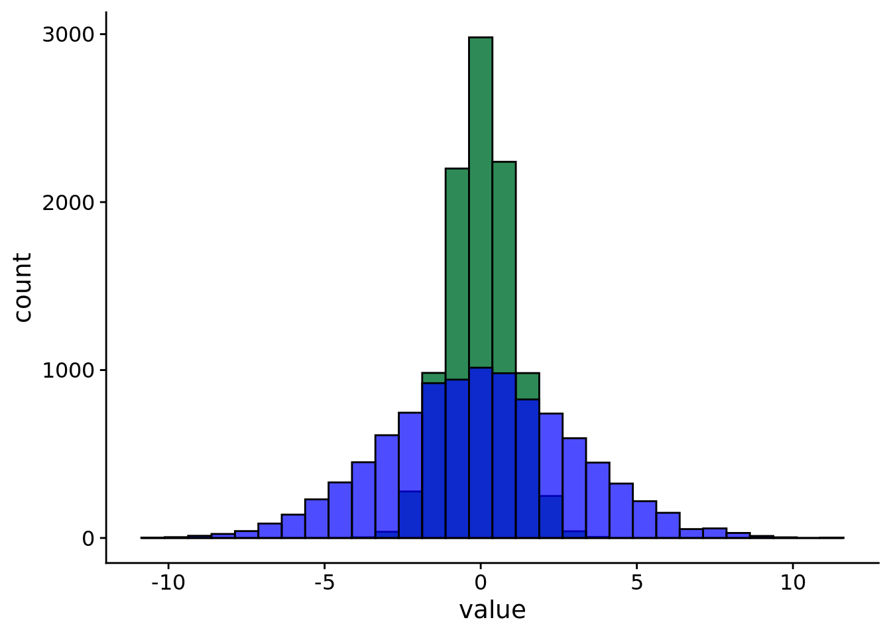
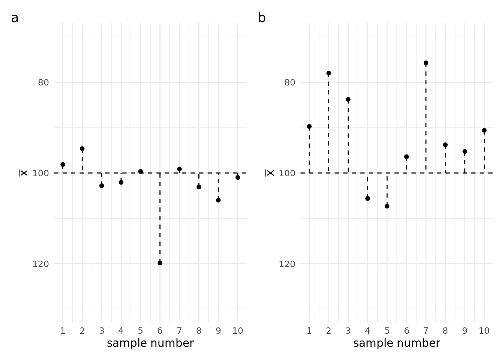

Last week we started learning about the tools we can use to describe data. Specifically, we learned about the mean, mode, and median. And we learned about how they are different ways of describing the typical value. But apart describing the typical value, we might also want a way to describe how spread out the data is around this value. We’ll start this week off by talking about ways to measure this spread. ## Measures of spread
If you look at Figure 1 you’ll see two data sets that are centered at the same value but have very different amounts of variability. Both sets of data have a mean of 0. But, as you can see, the values of one are spread out much more widely than the values of the other.

Figure 1: Histogram of two distributions with equal means but different spreads. N = 10,000 in each case.
This is why, apart from measures of central tendency, we also need measures that tell us about the spread, or dispersion of a variable. Once again, there are several measures of spread available, and we’ll talk about five of them:
Range
Interquartile range
Deviation
Variance
Standard deviation
Range
The range of a variable is the distance between its smallest and largest values. For example, if we gather a sample of 100 participants and the youngest is 17 years old, and the oldest is 67 years old, then the range of our age variable in this sample if 67 - 15 = 50 years.
Checking the range of a variable can tell us something about whether our data makes sense. Let’s say that we’ve run a study examining reading ability in primary school age children. In this study, we’ve also measured the ages of the children. If the range of our age variable is, for example, 50 years, then that tells us that we’ve measured at least one person that is not school age.
Beyond that, the range doesn’t tell us much of the information we’d usually like to know. This is because the range is extremelysensitive to outliers. What this means is that it only takes one extreme value to inflate the range. In our school example, it might be that all but one of the people measured is actually in the correct age range. But the range alone cannot tell us if this is the case. You can explore the range in Explorable 1 below.
Explorable 1 (Explore the Range)
To explore the range, first add some data points. Notice how the range is based on the two most extreme value. You can add more data points anywhere in the middle and the range won’t change. Try clicking on Preset 1 and then on Preset 2. Notice how the data points in Preset 1 are more bunched in the middle, but in Preset 2 they are more spread out. Although the data points in the middle are different in these two displays, the extreme points are unchanged, so the range is unchanged.
md`The range of this data is: ${(d3.max(summary.rangeplot.data) - d3.min(summary.rangeplot.data)) || htl.html`<font color="red">no data</font>`}`
Interquartile range
A slightly more useful measure than the range is the interquartile range or IQR. The IQR is the distance between the 1st and 3rd quartiles of the data. Quartiles, like the name suggests, are created by splitting the data into four chunks where each chunk has the same number of observations. Or put another way, the median splits the data into two, with half the observations on either side. Quartiles are created by taking each of these halves and splitting them in half again. The range covered by the middle two 25% chunks is the IQR. It is the range that covers the middle 50% of the data.
The benefit of the IQR over a simple range is that the IQR is not sensitive to occasional extreme values. This is because the bottom 25% and the top 25% are discarded. However, by discarding these data, the IQR provides no information about how spread out these outer areas are. You can explore the interquartile range in Explorable 2.
Explorable 2 (Explore the Interquartile Range)
To explore the interquartile range, first add some data points. Notice how the interquartile range takes into account more than just the two most extreme data points.
Try clicking on Preset 1 and then on Preset 2. Notice how the data points in Preset 1 are more bunched in the middle, but in Preset 2 they are more spread out. The two sets of data points have the same range, but they have different interquartile ranges.
But notice that you can also have data where the range differs and the interquartile range stays the same. Try clicking on Preset 3 and Preset 4. With these presets, the ranges change, but the interquartile ranges stay the same.
md`The interquartile range (IQR) of this data is: ${(d3.quantile(summary.iqrplot.data,0.75) - d3.quantile(summary.iqrplot.data,0.25)) || htl.html`<font color="red">no data</font>`}`
Both the range and the IQR work by looking at the distance between only two observations in the entire dataset. For the range, it’s the distance between the minimum point and the maximum point. For the IQR, it’s the distance between the midpoint of the upper half and the midpoint of the lower half. As a result, you can get arrangements of data that have very different spreads, but have the same range or IQR. You can explore this in Explorable 3.
Explorable 3 (Explore the Interquartile Range)
The range and the interquartile range only tell us limited information about how spread out the data is. Two datasets can have identical ranges and IQRs but still look very different. If you click Preset 1 you’ll see the data bunched around the middle. If you click Preset 2 you’ll see the data spread out along the entire range. But for both of these datasets the range and interquartile range are the same.
md`We can compute the statistics for this set of ${ summary.bothplot.data.length} data points: Range = ${summary.bothplot.data.length!=0?round2(d3.quantile(summary.bothplot.data,1) - d3.quantile(summary.bothplot.data,0)): htl.html`<font color="red">no data</font>`}IQR = ${summary.bothplot.data.length!=0?round2(d3.quantile(summary.bothplot.data,0.75) - d3.quantile(summary.bothplot.data,0.25)): htl.html`<font color="red">no data</font>`}`
viewof show_both_table = Inputs.toggle({ label:"Show data table" })
{let d = summary.bothplot.data; d.sort(function(a, b){return a - b});let isempty = summary.bothplot.data.length===0;let data = isempty ? [{ "Point #":null,"Value":null }] : d.map((v, i) => {return {"Point #": i +1,Value: v, }; });return show_both_table ?maketable(data) : htl.html`<p></p>`;}
Deviation
To get a more fine-grained idea of the spread, we’ll need a new way of measuring it, one where we take into account every data-point. One way to do this is to take each data-point and calculate how far it is away from some reference point, such as the mean. This is known as the deviation. You can explore deviation in Explorable 4, below.
Mathematically, we can represent deviation with Equation 1, below:
\[D=x_i - \bar{x} \tag{1}\]
Because we are calculating this for every data point there will be as many deviations as we have values for our variable. To get a single measure, we’ll have to perform another step.
One thing we could try doing is to add up the numbers. But this won’t work. To see why, try adding a few points in Explorable 4. Click Show data table so that you can see the actual values of the points, and the calculated deviations from the mean. Try adding up all the deviations. What do you notice?
As you can see, if you add up all the deviations, they add up to zero. Because the mean is our midpoint, the distances for all the points higher than the mean cancel out the distances for all the points lower than the mean.
We can get around this problem by taking the square of the deviations before adding them up. Squaring a number will turn a negative number into a positive number. Click Squared deviations in Explorable 4, to add a column for the squared deviations.
md`Now when we add up all the squared deviations we won't get zero. Now they add up to ${Math.round(sq_devs_sum *100) /100||"<font color='red'>warning: add some data!</font>"}.But now we have another problem. As you add more data above, the sum of the squareddeviations will get bigger and bigger. `
That’s not good because even big samples can have a small amount of variation, while smaller samples can vary a lot. We want our measure of spread to be able to capture this. To get around this, we’ll move on to our next measure of spread.
Variance
Our next measure of spread is the variance. The variance gets around the problem of the measure of spread getting bigger when we have bigger datasets. It’s gets around this problem by working out the average squared deviation from the mean. Or more precisely, the average squared deviations from the population mean. (The deviation from the population mean is important, but more on that later).
Usually we don’t have access to the population mean, but in Explorable 4, we’ll just define our population as all the points we’ve added to the plot.
md`If we now work out the **mean** of the squared deviations, rather than the **sum** of the squared deviations we get: ${Math.round(sq_devs_mean *100) /100||"<font color='red'>warning: add some data!</font>"}. `
In Explorable 4, we have access to the population mean, but usually we don’t. What if we instead just worked out the average squared deviations from the sample mean? Does this matter?
Well, it turns out it does. And for this reason, there’s actually two ways of calculating the variance. We use one way when we know about characteristics of the population (this is called the population variance), and we use another way when all we have access to is the sample (this is called the sample variance). We’ll explore both of these below, to get an understanding of why both methods exist.
Before we explore the two methods, we’ll start off simple with the scenario where we have access to the population mean. We can explore this scenario in Explorable 5.
Explorable 5 (Explore mean squared deviation from the population mean)
In this Explorable we’ll work with data that has population mean of 100. The variance of the population, which is 225, is marked as the horizontal line on Figure 2. In Figure 2 we can see the variance (mean squared deviation from the population mean) calculated for different samples drawn from the same population. As you can see, sometimes this value is higher than the variance of the population and sometimes it is lower. Just like we saw with sample means in Lecture 6.
data_stream1_raw = { replay_variance_1 Promises.delay(1500);var list = []var i =1while (i <10000) {var value = { x: i,y: raw_data.samp_var2[i] }; list.push(value); i = i +1;yield Promises.delay(5, list); }}
data_stream1_ave = { replay_variance_1 Promises.delay(1500);var list = []var i =1while (i <10000) {var value = { x: i,y: raw_data_ave.r_samp_var2[i] }; list.push(value); i = i +1;yield Promises.delay(5, list); }}
Figure 2: Variance (mean squared deviation from the population mean) calculated for different samples
Although our mean squared deviation from the population mean varies from sample to sample, let’s take a look at what happens if we take the running average by averaging together many samples. This is just what we did with the sample mean in Lecture 6, and you can see this in Figure 3. What do you notice?
That’s right, the running average of our mean squared deviations from the population mean eventually converges to the variance of the population. Although it might take a bit longer to do this than it did for the sample mean.
The situation in Explorable 5 is fairly straight forward. But what happens if we only have access to the sample so we have to use the sample mean instead of the population mean. You can explore this scenario in Explorable 6.
Explorable 6 (Explore mean squared deviation from the sample mean)
In this Explorable we’ll be using the sample population as in Explorable 5. So once again the mean of the population will be 100 and the variance of the population will be 225. But now instead of working out the deviations from the population mean we’ll work them out from whatever the mean of our sample happened to be. You can see the sample to sample change in the mean squared deviations from the sample mean in Figure 4.
data_stream2_raw = { replay_variance_2 Promises.delay(1500);var list = []var i =1while (i <10000) {var value = { x: i,y: raw_data.pop_var[i] }; list.push(value); i = i +1;yield Promises.delay(5, list); }}
data_stream2_ave = { replay_variance_2 Promises.delay(1500);var list = []var i =1while (i <10000) {var value = { x: i,y: raw_data_ave.r_pop_var[i] }; list.push(value); i = i +1;yield Promises.delay(5, list); }}
Figure 4: Variance (mean squared deviation from the sample mean) calculated for different samples
Again we can see that the value we calculate varies from sample to sample. But let’s look what happens we take the running average just as we did before. You can see this in Figure 5. What do you notice?
That’s right, unlike the example in Explorable 5 the running average of the mean squared deviation from the sample mean doesn’t converge on the variance of the population. It will always sit just below it.
As you can see from Explorable 6, if we only have access to information from the sample then the value we work out won’t on average be equal to the variance of the population. So what do we do? Instead, we need to work out a quantity known as the sample variance.
The quantity we’ve calculated so far is called the population variance. It can be represented with Equation 2, below:
To compute the sample variance we’ll just make one small change to this equation.
Sample variance
When we only have access to the sample mean (\(\bar{x}\)) and not the population mean (\(\mu\)) we have to make an adjustment to the formula shown in Equation 2.
For the population variance, we simply worked out the mean of the squared deviations—or, put another way, the sum of the squared deviations divided by the number of data points (N). For the sample variance we’ll instead work out the deviation from the sample mean and divide the sum of these values by N - 1. This results in Equation 3, blow:
But does this make a difference? You can explore this in Explorable 7
Explorable 7 (Explore the sample variance)
In Figure 6 you can see the sample variance calculated for different samples
data_stream3_raw = { replay_variance_2 Promises.delay(1500);var list = []var i =1while (i <10000) {var value = { x: i,y: raw_data.samp_var[i] }; list.push(value); i = i +1;yield Promises.delay(5, list); }}
data_stream3_ave = { replay_variance_2 Promises.delay(1500);var list = []var i =1while (i <10000) {var value = { x: i,y: raw_data_ave.r_samp_var[i] }; list.push(value); i = i +1;yield Promises.delay(5, list); }}
That’s right, unlike the example in Explorable 6 the running average of the sample variance is equal to the variance of the population.
Warning
The terminology sample variance and population variance can be very confusing. But the way to remember it is by thinking about what you have access to.
If you have access to the population characteristics then you can compute the population variance.
If you only have access to a sample then you must compute the sample variance.
The confusing part is that both these values, the population variance and the sample variance will on average be equal to the variance of the population. The population variance and the sample variance are values you calculate. The variance of the population is a feature of the population.
Because you’ll almost never have access to the features of the population, it’s always the sample variance that you’ll be calculating. In R the function for computing the variance is called var(), and this function will give you the sample variance (divided by N - 1).
Standard deviation
Variance is a good measure of dispersion and it’s widely used. However, there is one downside to variance, and that is that it can be difficult to interpret: it’s measured in squared units. For example, going back to our Salary example from Lecture 6, if salary is measured in USD, then the variance would be expressed in USD2, whatever that means!
Fortunately, the solution to this problem is easy: we simply take the square root of the variance. This measure is called the standard deviation. The standard deviation, denoted with \(s\) or \(SD\).
Because the standard deviation is just the square root of the variance, you’ll often see the variance denoted as \(s^2\) (for the sample variance) or \(\sigma^2\) (for the population variance).
The R function for computing the standard deviation is called sd(), and this function will give you the square root of the sample variance (divided by N - 1).
Why squared and not the absolute value
To turn all the deviations into positive values we square these values. But you might be thinking, why do we square them and why don’t we just take the absolute value instead? The short answer to this question is that taking the mean of the absolute values doesn’t really give us the kind of measure we want. To see what I mean, take a look and the plot below. Try clicking on Preset 1 and then Preset 2.
When you click Preset 1 the data are more spread out than when you hit Preset 2. But the mean of the absolute values of the deviations is the same in both plots. That’s not really what we want. But notice what happens to the standard deviation, which is calculated from the squared deviations. The standard deviation changes between the two displays so that it is smaller when the points are less spread out and larger when the points are more spread.
Understanding the relationship between samples and populations
Now we have some tools for describing measurements, both in terms of where they are centered (the mean) and in terms of how spread out they are (the standard deviation). With these tools in hand, we can return to the problem we talked about last lecture. That is, the problem of knowing whether our sample resembles the population.
In the previous lecture, we saw that when we took samples from the population, sometimes the sample mean was higher than the population mean, and sometimes it was lower. But on average the sample mean was the same as the population mean.
In the previous lecture, I also said that we wouldn’t know whether a particular sample mean was higher, lower, close to, or far away from the population mean. We can’t know this, because we don’t know the value of the population mean. But one thing we can know, is how much, on average, the sample means will deviate from the population mean. To see what I mean by this, let’s say a look at the two plots in Figure 8. In Figure 8a you can see the means of 10 different samples taken from the sample population. Sometimes the sample mean is higher than the population mean, sometimes it’s lower. But the thing I want you to notice is how spread out the values are. In Figure 8b you can see the means of a different collection of 10 samples. Again, some are higher and some are lower. But notice the spread of the values. If we were to calculate the standard deviation for Figure 8a, we would find that the sample means deviate from the population mean by an average of 6.78. And if we were to calculate the standard deviation for Figure 8b, we would find that the sample means deviate from the population mean by an average of 11.88.
Now we’re not using the standard deviation to tell us about the spread of the values in our sample. Instead, we’re using the idea to tell us about the spread of our sample means. This standard deviation, the standard deviations of the sample means from the population mean has a special name. It is called the standard error of the mean.

Figure 8: (a) 10 samples with a standard deviation of 6.78 (b) 10 samples with a standard deviation of 11.88
The standard error of the mean will be an important concept. But to fully appreciate the idea we’ll first need to learn about the sampling distribution. And before we can get to the sampling distribution, we first need to understand the what distributions are, what they look like, and why they look the way they do.
mutable summary =null
round2 = (v) =>Math.round(v *100) /100
import { set } from"@observablehq/synchronized-inputs"